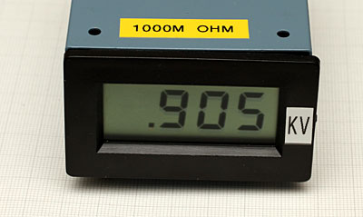
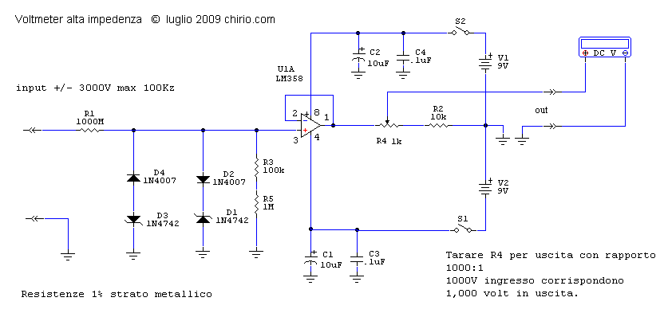
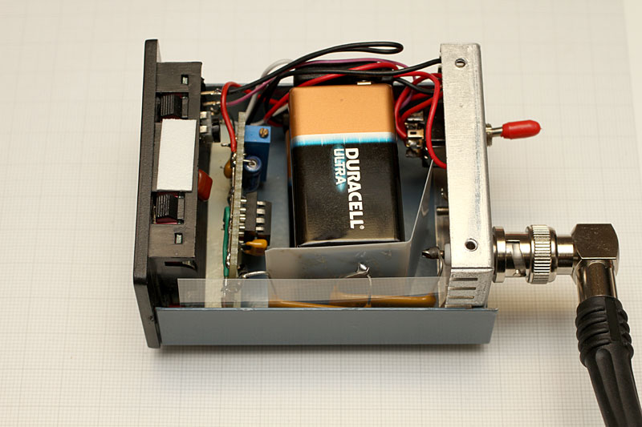

Radioattività
Volt Meter 1000Mohm
Preciso misuratore della HV di un Counter GM "Electronics design" di R.Chirio

- Per verificare il funzionamento di un contatore geiger bisogna anche essere sicuri che l'alta tensione in uscita sia corretta, e del giusto valore riferito alla sonda in uso.
- In genere sonde Russe funzionano da 400 a 500V, sonde Americane 900V e sonde Scintillatrici a 1200V.
- La tensione in uscita è quasi statica, cioè non è in grado di fornire potenza, serve pertanto un Voltmetro che abbia una impedenza interna il più alto possibile così da non interferire caricando l'uscita e quindi abbassando la lettura reale.
- Si è visto che con 300Mohm è già possibile una corretta lettura, ma come consigliato da alcuni costruttori Americani, 1000Mohm sono il valore ottimale per una precisa lettura dell'uscita.
Voltmetro ad altissima impedenza di ingresso. Rapporto 1000:1 max 1999 Volt

Con questo schema è possibile misurare le tensioni applicate a dispositivi che funzionano ad alta tensione tipo i tubi Geiger che vanno da 300 a 1500V Con i normali Multimetri digitali e i tester analogici, non è possibile misurare tali valori in quanto con la bassa impedenza di ingresso (10Mohm) tendono a caricare troppo il circuito sotto misura falsando di molto i valori letti.
- Il componente più critico è la resistenza da 1000Mohm si può ordinare in internet : code SM102031007F
- Diodi e zener sul circuito di ingresso servono da protezione per impulsi e scariche che potrebbero danneggiare l'ingresso dell'operazionale. Si possono anche omettere.
- R3 e R5 compongono la parte bassa del partitore con un rapporto da 990:1
- Operazionale in configurazione inseguitore permette l'adattamento con alta impedenza di ingresso e bassa impedenza di uscita. Si possono usare diversi tipi di Operazionali, importante con basso valore di offset, o meglio offset regolabile come il uA741. La configurazione ad inseguitore comporta guadagno 1. Con il LM358 abbiamo un valore di offset di 3-5mV.
- Il trimmer R4 serve a tarare esattamente il rapporto al valore di 1000:1, per la taratura utilizzare come riferimento di tensione, un circuito raddrizzante del 220V e misurare con multimetro il valore esatto tipicamente 310V DC (prestare attenzione) Collegare in uscita del circuito un voltmetro da 1,999 Vfs o un multimetro posizionato sulla medesima scala, leggere il valore di ingresso e tarare R4 per avere lo stesso valore letto prima solo con il multimetro.
- Il consumo dello strumento è bassissimo, qualche mA pertanto le due batterie da 9V durano per molte centinaia di ore.
- La tensione in ingresso DC può avere una escursione di +/-2000Volt. E' possibile misurare tensioni alternate AC fino a una frequenza di 100Kz.
- Se si vuole una maggiore precisione consiglio l'uso di Amp Operazionali con la regolazione fine dell'OFFSET, tipo il UA741 o altri più recenti.
- Se basta leggere solo tensioni HV positive è possibile eliminare la batteria V2 e anche sull'ingresso D1 e D2 , il piedino 4 va portato a massa, semplificando tutto.
- Si vedono le due batterie da 9V uno per il circuito e la seconda solo per il milliVoltmetro LCD.
- La resistenza da 1000Mohm è realizzata con la serie di 2 resistenze da 500Mohm
- Le resistenze sono isolate tramite due fogli di mylar, per evitare scariche verso massa e verso le batterie.
- Sul posteriore l'interruttore e il connettore BNC, consiglio di montare BNC di qualità con isolante teflon in quanto non tutti tengono 2000V.

{kind=link}
Il Voltmetro HV collegato ad uno Scaler, privo della lettura dell'HV.

Resistenza da 300Mohm realizzata con 30 resistenze SMD da 10Mohm. Le resistenze sono protette da uno strato di Araldite. la costruzione, è molto semplice e l'isolamento con la resina garantisce una tensione di lavoro fino a 5000Volt.

Versione semplificata del voltmetro HV, da collegare direttamente a un Multimetro (DMM). Sulla portata 2V, leggeremo x1000 quindi KVolt. Il trimmer cermet multigiri, serve per tarare preciso il rapporto 1000:1.
Importante: il DDM deve avere 10Mohm di impedenza d'ingresso, alcuni di basso costo hanno solo 1Mohm.
Campioni per taratura geiger
Disponibili campioni Pechblenda sotto piombo per la taratura Geiger Counter.
Contenitori diam. 29mm, valori a richiesta da 0,100 mRh a 2 mRh, emissione tipo:
- Alpha, Beta + gamma (Minerale libero)
- Beta + Gamma (Minerale inglobato in resina)
- Solo Gamma (Minerale schermato con alluminio 1mm)
Contattare: info@chirio.com


Due esempi di campioni con Minerale libero.
Tutti i campioni vengono testati con sonde Pancake tipo Eberline HP-260 oppure Ludlum 44-9
© Roberto Chirio: all rights reserved.